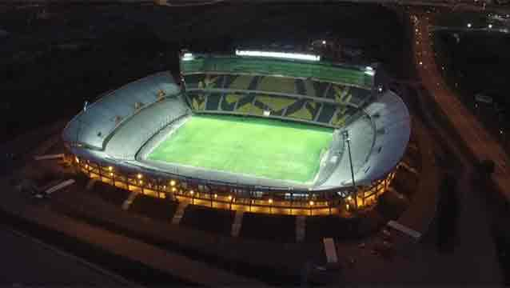

En el año 1900 nuestra Institución fue una de las cuatro entidades que fundaron la "The Uruguay Association Football League", debutando en la primer competencia local oficial el 10 de junio de aquel año enfrentando al Albion, a quién derrotó por 2 a 1. El club del ferrocarril se adjudicó aquel primer campeonato, al igual que el de 1901, comenzando a forjar de esa manera la historia gloriosa que marcaría el destino del Club.
El 12 de marzo de 1914 el "C.U.R.C.C." cambió oficialmente su nombre por el de "Club Atlético Peñarol". Esta reforma fue informada a "Liga Uruguaya de Football" el 14 de marzo, siendo aprobada por ésta y todos sus clubes asociados el 17 de marzo y así comunicado al Club por carta oficial. Finalmente, el 13 de abril de ese año el Poder Ejecutivo le otorgó la personería jurídica al club.
Durante la era amateur Peñarol obtuvo 11 Campeonatos Uruguayos, siendo el de 1905 el único en la historia del país obtenido en forma invicta sin goles en contra. El de 1924 lo hubo en la "Federación Uruguaya de Football" constituída como consecuencia del cisma ocurrido en el fútbol del país en 1922 y que por el fallo arbitral conocido como "Laudo Serrato" -dictado el 9 de octubre de 1925 por el Presidente de la República- se uniera en absoluto pie de igualdad con la otra asociación formándose una nueva Institución que llevaría el nombre de "Asociación Uruguaya de Football" y que funcionaría a partir de 1927.
siendo en el interregno regido el fútbol organizado en el país por el "Consejo Provisorio", que en 1926 organizó un Campeonato anual con el formato tradicional y entre todos los Clubes que por el aludido Laudo integraban la Primera División, el cual logró Peñarol sobre Wanderers -2º- y Nacional -3º-.
